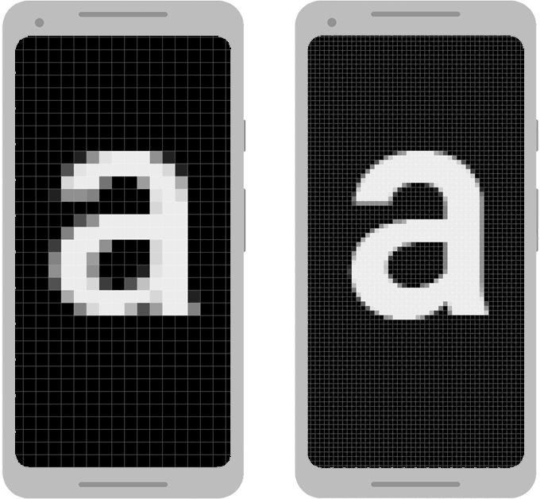

Publish game on Android with Macroquad

🔗1. Introduction
This tutorial is based on the experience of publishing Zemeroth game on the Google Play Store. The game is now available as open test, check it out!
Topics covered:
- Building a macroquad game for android
- Common pitfalls and debugging tips
- Setting up and uploading an APK to a Google Play
🔗2. Setting up your Environment
🔗A docker way
On the machine with docker pulling all the NDK dependencies is as simple as
docker pull notfl3/cargo-apk
Docker is a recommended way to build macroquad's game for Android.
🔗Building an APK, a docker way
APK may be made with just one command:
docker run
--rm
-v $(pwd):/root/src
-w /root/src
notfl3/cargo-apk cargo quad-apk build --release
Will produce an apk in target/android-artifacts/release/apk.
This command takes a while - each docker invocation do a clean build for all 3 android targets. There are different strategies to make docker cache build temp files between builds, described in a little docker cheatsheat
🔗A manual way
Docker simplify the process of installing android-sdk and android-ndk. But, sometimes, it may be more convinient to use all native build pipeline. While this is not really recommended, this path is included to a tutorial for better illustrating what exactly is going on in the container.
🔗Installing pre-requisites:
Exact commands and pathes may depend on the host OS. Here linux commands are used, but on all the other OSes the idea should be very similar.
-
JRE or JDK
This step highly depends on the OS, for ubuntu:
sudo apt-get install openjdk-8-jdk -
Rust android
Assuming rustup's rust installation:
rustup target add armv7-linux-androideabi rustup target add aarch64-linux-android rustup target add i686-linux-android rustup target add x86_64-linux-android -
Android SDK
# create a folder for all the android pre-requisites stuff mkdir /this/may/be/any/path/android cd android wget -q https://dl.google.com/android/repository/sdk-tools-linux-4333796.zip unzip -q sdk-tools-linux-4333796.zip rm sdk-tools-linux-4333796.zip tools/bind/sdkmanager "platform-tools" tools/bin/sdkmanager "platforms;android-29" tools/bin/sdkmanager "build-tools;29.0.0" tools/bin/sdkmanager --update -
Android NDK
# go to the same dir created for android-sdk cd /path/from/previous/step/android wget -q https://dl.google.com/android/repository/android-ndk-r25b-linux.zip unzip -q android-ndk-r25b-linux.zip rm android-ndk-r25-linux-x86_64.zip -
Cargo APK
cargo-quad-apkis a cargo extension, allowingcargo install cargo-quad-apk
🔗Building an APK, a manual way
export ANDROID_HOME=/path/from/previous/step/android
export NDK_HOME=/path/from/previous/step/android/android-ndk-r25
# for a debug build
cargo quad-apk build
# for a release build
cargo quad-apk build --release
An apk will be in target/android-artifacts/debug/apk or target/android-artifacts/release/apk.
🔗3. Fine tuning the game for android
🔗Targeting API Level >= 31
You have to add this to your Cargo.toml
[package.metadata.android.activity_attributes]
"android:exported" = "true"
🔗Assets folder
Assuming following project structure:
.
├── assets
├── └── nice_texture.png
├── src
├── └── main.rs
└── Cargo.toml
To include assets folder to an APK, add this to your Cargo.toml:
[package.metadata.android]
assets = "assets/"
Later on texture may be loaded with load_texture("nice_texture.png").
However, on PC, usually, the load_texture call will look like load_texture("assets/nice_texture.png") - the assets folder itself is a part of the path.
To fix it and use uniforms path between android and PC set_pc_assets_folder may help.
macroquad::file::set_pc_assets_folder("assets");
Now its load_texture("nice_texture.png") on both platforms.
🔗High-dpi
Android devices have significant pixel dencity difference. By default, android tries to emulate a low-density display on a high-density pixel display.
This means that screen_width()/screen_height() may give a value way lower than the actual screen pixel resolution, but later on android will automatically upscale the viewport.
This may be OK - smaller viewport means better FPS, but if android's upscale is not required - the game should tell android to support "high-dpi" screens.
fn window_conf() -> window::Conf {
window::Conf {
window_title: "Zemeroth".to_owned(),
high_dpi: true,
..Default::default()
}
}
#[macroquad::main(window_conf)]
async fn main() {
}
🔗Screen orientation
By default Macroquad games are fullscreen and allows any screen locations. To limit possible screen orientations add this to your Cargo.toml:
[package.metadata.android.activity_attributes]
"android:screenOrientation" = "userLandscape"
🔗Icon

Application icon lives in an "resources" - special section in APK. To include "res" folder to an APK:
[package.metadata.android]
res = "android_res"
icon = "@mipmap/ic_launcher"
And the icon itself for different DPI may look something like this:
android_res/
├── mipmap-hdpi
│ └── ic_launcher.png
├── mipmap-mdpi
│ └── ic_launcher.png
├── mipmap-xhdpi
│ └── ic_launcher.png
├── mipmap-xxhdpi
│ └── ic_launcher.png
└── mipmap-xxxhdpi
└── ic_launcher.png
Icons for each size certainly may be generated manually. For this tutorial http://romannurik.github.io/AndroidAssetStudio/icons-launcher.html was used, worked pretty good.
🔗Debug logs
All the warn!/info!/debug! macroquad's messages goes into android system messages. To access android's system messages there is adb logcat command. There are various way to filter adb logcat.
🔗Filter adb logcat by tag
Filter by tag will show only messages posted by macroquad's warn!/info!/debug!.
adb logcat -v brief SAPP:V "*:S"
-v brief will save a little bit of screen space, hiding some log metadata.
Arguments after adb logcat are filter specification.
SAPP:V - For messages with tag SAPP V(verbose) filter will be applied. All the SAPP messages will be in the output. *:S - For all the other tags S(silent) filter will be applied. All the other messages will be filtered out.
🔗Filter by PID
Sometimes application produced some extra system messages. It may be some system warnings or some unhandled native libraries problems. But those messages may be filtered out when adb logcat is filtered by tag.
PID is a process id, and filtering by PID will give all the application output, with any tag.
# Find out PID
> adb shell pidof -s rust.CRATENAME
30243
# Get all the messages from a given PID
>adb shell pidof -s 30243
Depending on the command processor those to commands may be usually reduced to something like
adb logcat --pid=$(adb shell pidof -s rust.CRATENAME)
🔗4. Signing the APK
By default, cargo quad-apk generates debug kestore file and is signing up an APK with a debug key. This allows the APK to be installed locally, but is not enough for the Google Play.
For the Play Store non-debug keystore file is required, and this file should be uploaded to the Play Console to verify developer identity.
To generate the key keytool is required. keytool is a part of a java ditribution and is being shipped with openjdk.
To sign the the APK apksigner is requires. apksigner is a part of Android SDK.
keytool -v -genkey -keystore mygame.keystore -alias mygame -keyalg RSA -validity 10000
Now all the pre-requisites are fullfilled and the key is ready to be used for a release build.
First, tell cargo-apk to stop signing the build with debug keystore:
cargo quad-apk build --release --nosign
Than sign the APK with a non-debug keystore file:
apksigner sign --ks mygame.keystore my-app.apk --ks-key-alias alias_name
It may be verified with
apksigner verify my-app.apk
The official documentation on signing can be found here..
🔗NOTE: how to get keytool/apksigner with docker
Assuming android keystore lives in ~/.android and .apk to sign lives in current working directory:
docker run --rm
-v (pwd):/root/src
-v(/home/USER/.android):/root/.android_secrets
-w /root/src -it notfl3/cargo-apk /bin/bash
This command will gives a bash session with current directory mounted to /root/src and .android mounted to /root/.android_secrets
And inside the container APK may be signed with
apksigner sign --ks my.keystore my-app.apk --ks-key-alias alias_name
🔗Android targets
By default cargo quad-apk is building an APK for 3 different platforms.
To comply Google Play requirements and get all the platforms:
[package.metadata.android]
..
build_targets = [ "armv7-linux-androideabi", "aarch64-linux-android", "i686-linux-android", "x86_64-linux-android" ]
To reduce build time while debugging - pick one for a testing device in use:
[package.metadata.android]
..
build_targets = [ "armv7-linux-androideabi" ]
🔗Google Play versioning
Google play have its own versioning mechanism for uploaded APKs.
Each APK for google play should have unique version_code.
Otherwise google developer console will end up with Version code 1 has already been used. Try another version code.".
To set version_code from an app Cargo.toml:
[package.metadata.android]
..
version_code = 2
version_name = "Version Name"
The official documentation on versioning can be found here..
🔗Preview assets for a store page
To submit your game for a google review and do an open test/release - the Play Store page should be filled setted up - screenshots/descriptions should be uploaded. Lots of data will be marked as (*)required, however, the real minimal subset of game graphics to upload is:
- 512x512 icon
- 1024x500 banner
- two 16:9 screenshots
Useful article on preview assets..
🔗Internal test, open test and release
Difference between an internal, closed, and open test? You can create releases on three testing tracks before you release your app to production.
Internal testing: Create an internal testing release to quickly distribute your app to up to 100 testers for initial quality assurance checks.
Do not require setted up store page and do not require a review. Helps with ensuring that signing process actually worked, build is really uploaded. Also allows to add testers by email.
Closed testing: Create a closed testing release to test pre-release versions of your app with a wider set of testers to gather more targeted feedback.
Almost an open test, but requires adding tester's email.
Open testing: Create an open testing release to run a test with a large group and surface your app's test version on Google Play. If you run an open test, anyone can join your testing program and submit private feedback to you.
Almost a release, page is publicly available, no additional actions from testers required to install the game.
More info on testing tracks can be found here.
🔗APK to AAB
Those days GooglePlay do not accept the goold old .apk. Now we are forced to upload .aab and all the official docs refer gradle/android studio to build an .aab.
Turned out that .aab is exactly the same archive as the apk, but .xml's are converted to protobufs and a few files got renamed! I guess it is possible to make a little rust app converting the xml's, but right now I am using the aapt2/bundle-tool from google.
This little script do the job: https://gist.github.com/not-fl3/ffff62804ca2c8acc6d8ef74aa610eb6 (yes it is just "aapt2 convert && bundletool build-bundle", why it is never mentioned in the official android docs?)